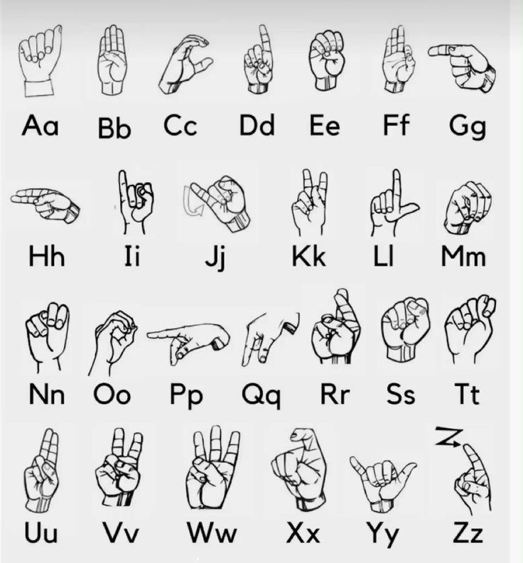

Qëllimi kryesor i aplikacionit tonë është të ofrojë një mënyrë të thjeshtë dhe efektive për të mësuar gjuhën e shenjave të Kosovës (KSL). Me një përkushtim të thellë ndaj përmirësimit të komunikimit dhe kuptimit për komunitetin me dëgjim të kufizuar, synojmë të kontribuojmë në rritjen e përfshirjes së tyre në shoqëri. Përmes një qasjeje profesionale dhe me ndjeshmëri sociale, jemi të vendosur të sjellim një aplikacion cilësor dhe edukativ për të gjithë komunitetin në Kosovë.
An introduction to the basics of sign language.
Sign language uses visual gestures, facial expressions, and body language. It helps to convey complex ideas and emotions, making communication more accessible for the deaf and hard of hearing.
Explore how sign language promotes inclusivity.
Learning sign language can enhance social connections, improve cognitive abilities, and foster empathy towards individuals with hearing impairments.
Discover various resources for learning sign language.
Many online platforms offer free and paid courses. Community centers also often provide classes, allowing for hands-on learning with certified instructors.

An overview of various sign languages used worldwide.
Just like spoken languages, sign languages differ by region and culture. ASL (American Sign Language), BSL (British Sign Language), and Auslan (Australian Sign Language) are just a few examples.

The role of sign language in educational settings.
Integrating sign language in schools supports deaf and hard-of-hearing students. It also promotes a bilingual approach, allowing for better communication with peers and educators.

Exploring how technology is changing sign language communication.
Advancements in AI and machine learning are leading to the development of sign language recognition software, enhancing communication accessibility for deaf individuals.